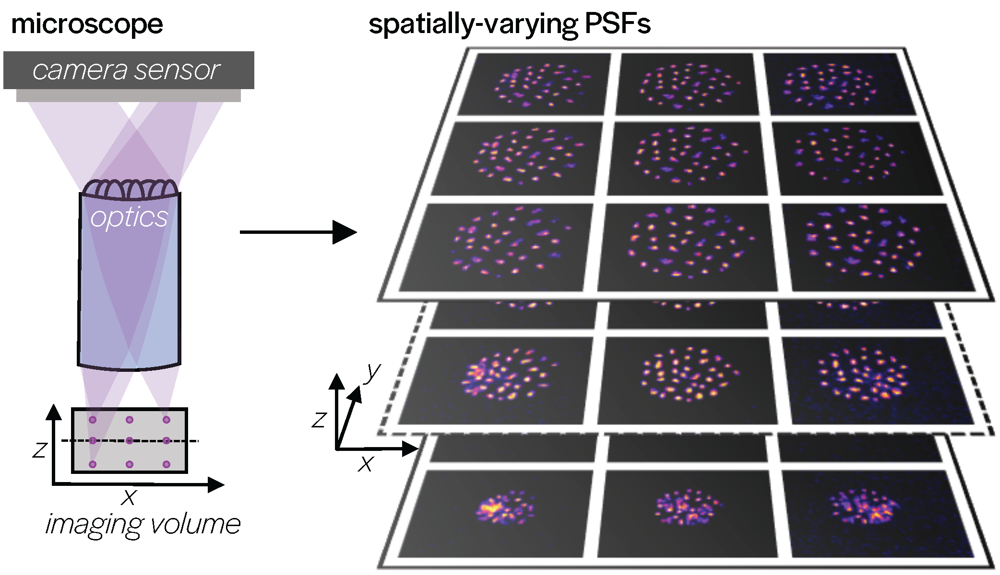
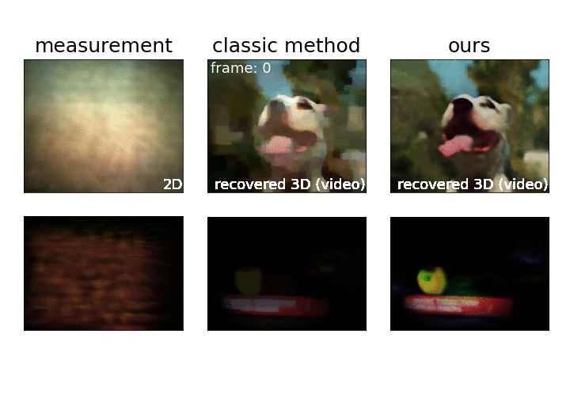
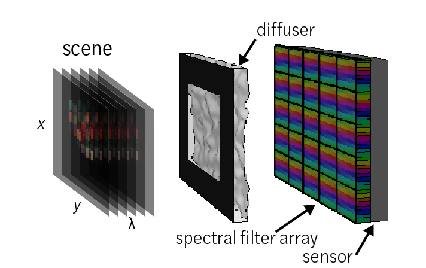
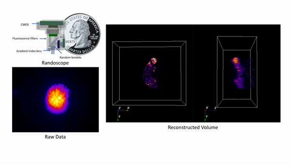

Hello! I am a PhD Candidate in Laura Waller's Computational Imaging Lab at UC Berkeley in the Electrical Engineering and Computer Sciences (EECS) department. I work on co-designing optics and algorithms to create better, smaller, and more capable cameras and microscopes. My work is at the intersection of signal processing, optics, optimization, and machine learning.
I am affiliated with the Berkeley Artificial Intelligence Research (BAIR) Lab and am an NSF GRFP fellow.
News:
May 2022: I'll be starting at postdoc at MIT through the support of the MIT Postdoctoral Fellowship for Engineering Excellence !Apr. 2022: I'll be giving a lecture on May 6th as part of the Warren Grundfest Lectures in Computational Imaging series!
Mar. 2022: Paper accepted to CVPR 2022 as an oral!
June 2021:
Congrats to my REU mentee Vi Tran for transferring from Orange Coast College to UC Berkeley!
Congrats to my undergraduate mentee Ellin Zhao on choosing UCLA for her PhD!
Congrats to my undergraduate mentee Nico Deshler on choosing the University of Arizona Optics for his PhD!
Oct. 2020: Selected to participate in EECS Rising Stars 2020 Workshop
July 2020:
Selected to participate in the NextProf Nexus 2020 Workshop
Congrats to my undergraduate mentees Ellin and Nico on their paper at OSA's Imaging and Applied Optics Congress on multi-sensor lensless imaging!
Research Projects
Dancing under the stars: video denoising in starlight
K. Monkhova, S. Richter, L. Waller, and V. Koltun
Project Page /
Paper (CVPR Oral) /
Dataset /
Video
Imaging in low light is extremely challenging due to low photon counts. Using sensitive CMOS cameras, it is currently possible to take videos at night under moonlight (0.05-0.3 lx illumination). In this paper, we demonstrate photorealistic video under starlight (no moon present, <0.001 lx) for the first time. To enable this, we learn a physics-based noise model to more accurately represent camera noise at the lowest light levels. Using this noise model, we train a video denoiser using a combination of simulated noisy video clips and real noisy still images. We present a 5-10fps video dataset with significant motion taken between 0.6-0.7 mlx with no active illumination. Comparing against alternative methods, we achieve improved video quality at the lowest light levels, demonstrating photorealistic video denoising in starlight (submillilux) for the first time.
Deep learning for fast spatially-varying deconvolution
K. Yanny*, K. Monkhova*, R. Shuai, and L. Waller
Project Page /
Paper (Optica)
All optical systems blur images due to imperfections in the optics or intentional design to encode additional information. Algorithms can be used to undo some of this blur or recover 3D content, but most assume that the blur is the same across the field of view, whereas in practice the blur can be very different across the image. Our approach, called MultiWienerNet, combines knowledge of the field-varying blur with deep learning through multiple differetiable Wiener filters to undo the blur quickly and efficiently. We show a 1,500X speedup against classic methods as well as improved image quality.
Untrained networks for compressive lensless photography
K. Monkhova*, V. Tran*, G. Kuo, L. Waller
Project Page /
Paper (Optics Express)
Deep learning-based reconstruction methods can improve image quality for many inverse problems, but for high-dimensional imaging (e.g. high speed video, hyperspectral, etc.) obtaining labeled pairs to train deep networks is often impractical or impossible. In this work, we propose to use unsupervised learning for compressive lensless photography. Our 'untrained network' is optimized using only our measurement and physics model to recover a video or hyperspectral volume from a 2D measurement. We demonstrate improved image quality for single-shot compressive video and single-shot hyperspectral imaging without needing any training data.
Spectral DiffuserCam: lensless snapshot hyperspectral imaging
K. Monkhova*, K. Yanny*, N. Aggarwal, L. Waller
Project Page /
Video /
Code /
Paper (Optica)
In this work, we propose a novel, compact, and inexpensive computational camera for snapshot hyperspectral imaging. Our system consists of a repeated spectral filter array placed directly on the image sensor and a diffuser placed close to the sensor. Each point in the world maps to a unique pseudorandom pattern on the spectral filter array, which encodes multiplexed spatio-spectral information. A sparsity-constrained inverse problem solver then recovers the hyperspectral volume with good spatio-spectral resolution. By using a spectral filter array, our hyperspectral imaging framework is flexible and can be designed with contiguous or non-contiguous spectral filters that can be chosen for a given application.
Miniscope3D: optimized single-shot miniature 3D fluorescence microscopy
K. Yanny, N. Antipa, W. Liberti, S. Dehaeck, K. Monakhova, F. L. Liu, K. Shen, R. Ng, L. Waller

Project Page /
Code /
Paper (Nature LS&A)
In this work, we replace the tube lens of a Miniscope with an engineered and optimized diffuser that's printed using a Nanoscribe 3D printer. The resulting imager is inexpensive, tiny (the size of a quarter), and can capture 3D fluorescent volumes from a single image, with resulting 3 micron lateral resolution and 10 micron axial resolution at video rates with no moving parts. Check out more of our 3D videos of water bear videos here.
Physics-based learning for lensless imaging

K. Monakhova, J. Yurtsever, G. Kuo, N. Antipa, K. Yanny, L. Waller
Project Page /
Code /
Dataset /
Paper (Optics Express)
Mask-based lensless imagers, like DiffuserCam, can be small, compact, and capture higher-dimensional information (3D, temporal), but the reconstruction time is slow and the image quality is often degraded. In this work, we show that we can use knowledge of optical system physics along with deep learning to form an unrolled model-based network to solve the reconstruction problem, thereby using physics + deep learning together to speed up and improve image reconstructions. As compared to traditional methods, our architecture achieves better perceptual image quality and runs 20× faster, enabling interactive previewing of the scene.
Work Experience
- Intel Intelligent Systems Lab, Spring 2021
- MIT Lincoln Laboratory, Summer 2016
- Northrop Grumman Electronic Systems, Winter 2016
- Northrop Grumman Aerospace Systems, Summer 2015
- Carnegie Mellon Robotics Institute, Summer 2014
- NASA Marshall Robotics Academy, Summer 2013
Awards and Recognition
- UC Berkeley EECS Demetri Angelakos Memorial Achievement Award, 2021
- UC Berkeley EECS Chairs’ Graduate Award, 2020
- NSF Graduate Research Fellowship, 2016
- NDSEG Graduate Research Fellowship, 2016 (declined)
- Barry M. Goldwater Scholarship, 2015
- University at Buffalo Presidential Scholar, 4 year full ride scholarship